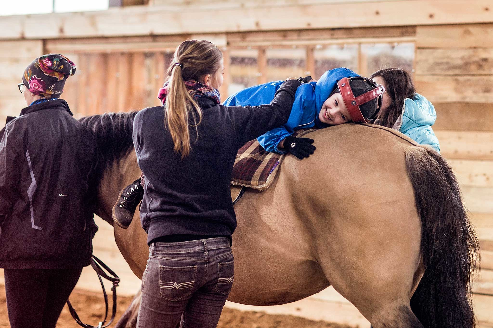
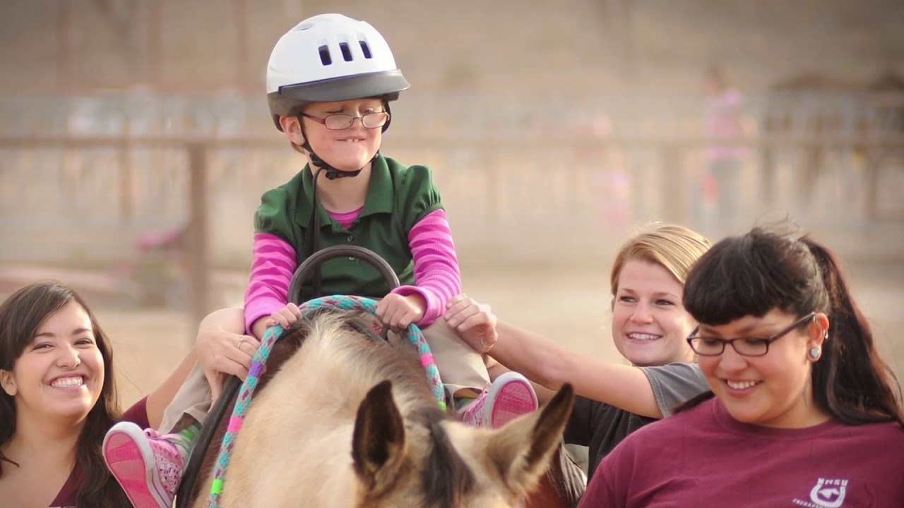
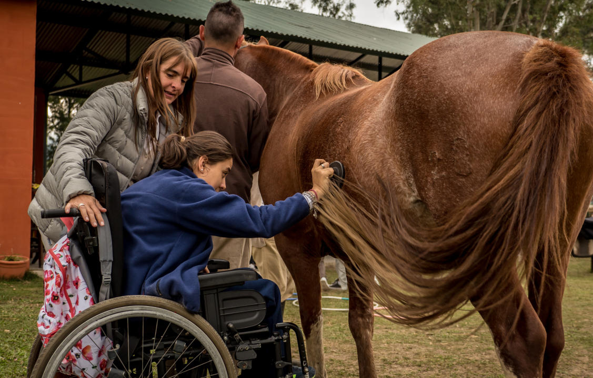
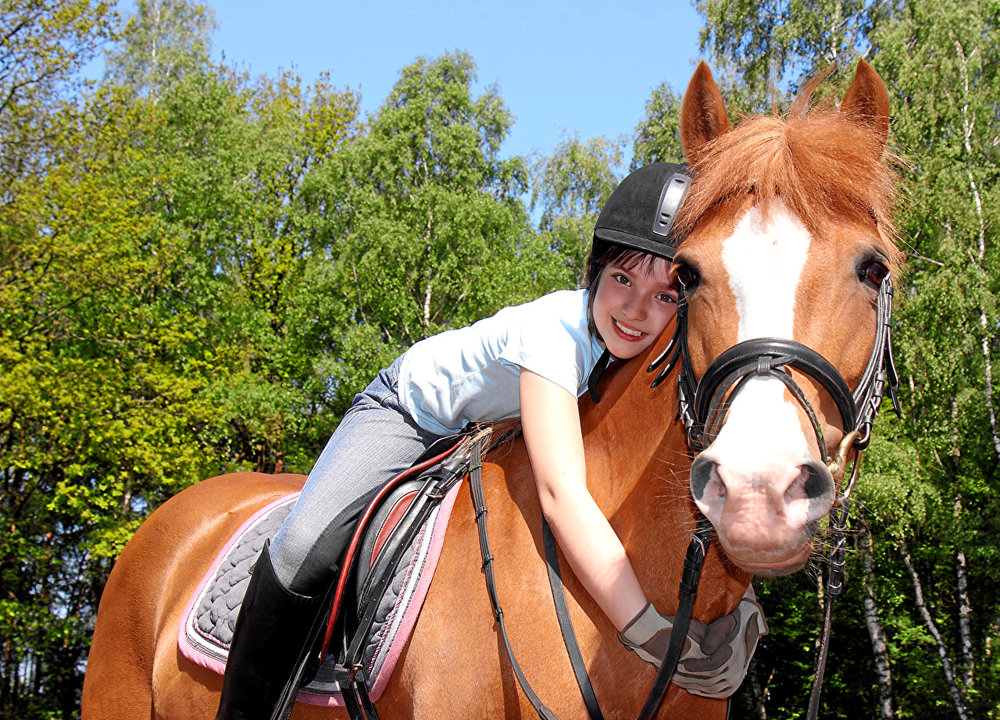

Галерея



×

Иппотерапия - это метод лечения и реабилитации, который использует верховую езду и взаимодействие с лошадьми для улучшения физического, эмоционального и социального благополучия. Это уникальный вид терапии, который помогает людям с различными заболеваниями и травмами.
В иппотерапии используются различные методики в зависимости от целей лечения. Это могут быть упражнения на лошади, такие как управление лошадью, выполнение специальных заданий и упражнений, а также терапевтические прогулки на лошади. Все занятия проводятся под контролем опытных инструкторов и медицинских специалистов.
Екатерина: "Мой сын начал заниматься иппотерапией полгода назад, и я вижу значительные улучшения в его координации и коммуникативных навыках. Он стал более уверенным в себе и с удовольствием посещает каждое занятие."
Александр: "После травмы спинного мозга я долго не мог вернуться к нормальной жизни. Иппотерапия помогла мне восстановить силы и вернуться к активному образу жизни. Огромное спасибо инструкторам за их профессионализм и поддержку."
Иппотерапия - это метод лечения и реабилитации, который использует верховую езду и взаимодействие с лошадьми для улучшения физического, эмоционального и социального благополучия.
Обычно один сеанс иппотерапии длится от 30 до 60 минут в зависимости от состояния пациента и программы лечения.
Иппотерапия подходит людям с различными физическими, психическими и эмоциональными нарушениями, включая ДЦП, аутизм, травмы спинного мозга, неврозы и депрессии.